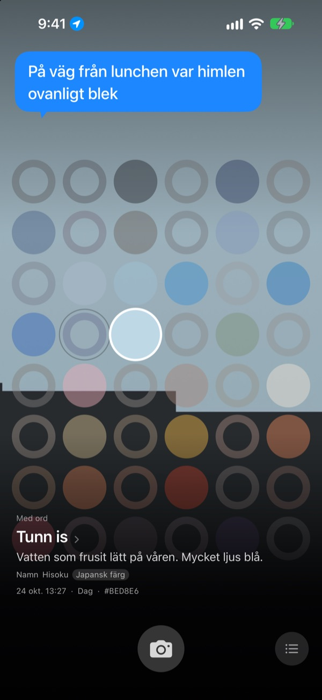
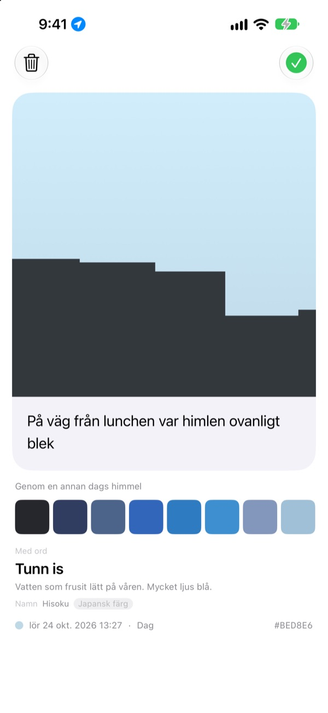
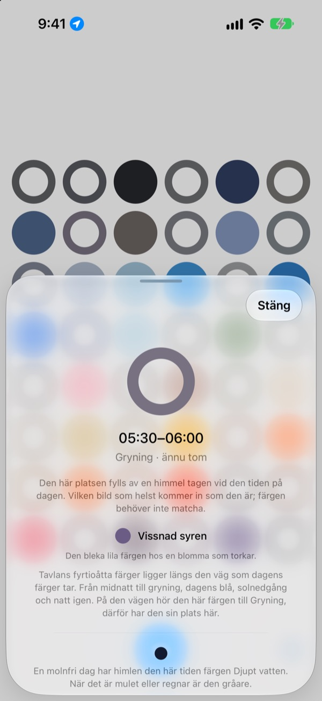
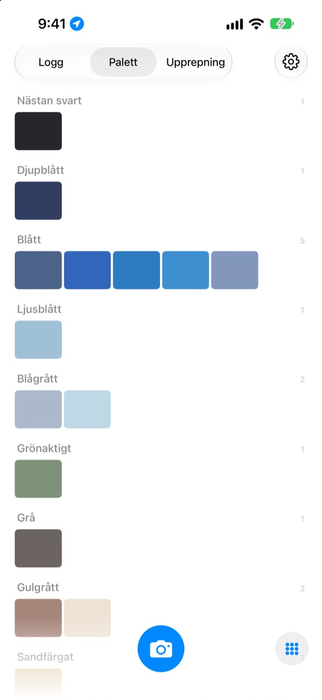

Vilken färg hade
himlen idag?
Fota himlen, så fylls rutan för den tiden på dagen med färgen du fångade, på ett bräde med fyrtioåtta rutor. Färgen får också ett namn du kan se framför dig, som tunn is, simbassängkakel eller mogen kaki.
Gratis. Inget konto, ingen inloggning.

Prova brädet
Tryck på en ruta för att se vilken del av dagen den hör till. Lägg till en himmelsbild för att fylla rutan för just nu, spola sedan fram dagarna och se hur brädet förändras.
Du ser himlen varje dag men minns inte en enda färg
Himlen på väg till jobbet, himlen när du gick ut efter lunch: på kvällen är färgerna borta. De himmelsbilder du faktiskt tog försvinner bland allt annat i bildbiblioteket. SkyDex samlar dem som färger och visar på ett enda bräde vilken väg dagens himmel tog.
Varje himmel får ett namn
Varje färg får först ett namn du kan se framför dig, som tunn is, simbassängkakel eller mogen kaki. Under det kommer ett namn med ursprung: koreansk färg, japansk färg, pigment eller webbfärg.
När träffen är nära står det Namn, annars står det ärligt Närmaste namn.

Lämna en rad
Ett kort öppnas så fort du har fotat. Skriv vad du tänkte medan du tittade upp, så svävar det fram över himlen igen varje gång du trycker på rutan på brädet.
Du kan också lägga en annan dags himmelsfärg över bilden och dela resultatet som en bild.

Tomma rutor visar vägen
Tryck på en tom ruta för att se vilken del av dagen den hör till och vilken färg du ska leta efter. Den berättar också hur himlen ser ut vid den tiden en molnfri dag, anpassat efter soluppgång och solnedgång där du är.
Färgen behöver inte stämma. Det grå en mulen dag är också den dagens himmelsfärg.

Logg, palett, upprepning
Bläddra bland dina himlar i ordning och samla färgerna i paletter som Blått, Grå och Sandfärgat. Fota samma timme en annan dag så hamnar de två sida vid sida.
Widgetar på hemskärmen visar dagens bräde och dagens himmel med en blick.

Tre steg för att komma igång
- 1
Titta upp
Tryck på kameraknappen under brädet och låt himlen fylla kvadraten.
- 2
En ruta fylls
Rutan för just nu får färgen du fångade, och ett namn.
- 3
Lämna en rad
Skriv på kortet som öppnas vad du tänkte.
Så delar brädet upp dagen
- Midnatt · 00.00–05.00
- sex rutor
- Gryning · 05.00–08.00
- sex rutor
- Dag · 08.00–16.00
- tolv rutor
- Sen eftermiddag · 16.00–18.00
- sex rutor
- Solnedgång · 18.00–21.00
- tolv rutor, en per kvart
- Natt · 21.00–24.00
- sex rutor
Kring solnedgången, när himlen skiftar snabbt, sitter rutorna tätt, och mitt i natten, när den knappt rör sig, är de breda. Överst är midnatt, och dagen rinner nedåt.
Frågor
Hur fylls en ruta?
En himmel du fotar idag fyller rutan för tiden du tog den, även om färgen inte blev som du väntat. Så såg himlen faktiskt ut just då. Himlar från tidigare dagar kommer in efter färg: ligger en tillräckligt nära en rutas färg fyller den rutan, och varje himmel fyller bara en ruta.
En ruta som var full igår är tom idag.
Brädet är alltid idag. En ruta som gårdagens himmel fyllde efter tid matchas på nytt enbart efter färg när dygnet slår om. Därför är brädet vissa dagar nästan fullt och andra dagar ganska tomt. Dina bilder har inte försvunnit: alla himlar finns i Logg och i färgordning i Palett.
Mina fyllda rutor bleknar.
Det är med flit. En bild behåller sin riktiga färg i en vecka och bleknar sedan långsamt under de följande åtta veckorna. Den raderas inte och bleknar aldrig bort helt. Fota himlen vid den tiden igen så får rutan genast full färg tillbaka. Ingen svit att bryta, inga poäng att vinna tillbaka.
Måste färgen stämma?
Nej. Det finns inget godkänt eller underkänt. Alla bilder sparas, och det grå en mulen dag är också den dagens himmelsfärg.
Varför frågar appen efter min plats?
Bara för att kunna berätta, när du trycker på en tom ruta, hur en molnfri himmel ser ut vid den tiden, anpassat efter soluppgång och solnedgång där du är. Den använder en ungefärlig plats på kilometernivå, och koordinater kopplas aldrig till dina bilder. Säger du nej fungerar allt ändå, med Seoul som utgångspunkt.
Kan jag lägga till en himmel från bildbiblioteket?
Ja. En himmel du väljer i Bilder i stället för med kameran beskärs också till en kvadrat och fyller rutan för just nu, precis som en du fotar.
Hur raderar jag en bild?
Öppna bilden och tryck på Radera, eller svep åt vänster på den i Logg. Den tas bort från både enheten och iCloud. Raderar du appen ligger kopian kvar i iCloud, så dina himlar kommer tillbaka om du installerar den igen.
Vad händer när jag byter telefon?
Dina himlar sparas i din egen iCloud, så de följer med till en ny enhet som är inloggad med samma Apple-konto. Inget konto och ingen server, och dina bilder och färger skickas aldrig till utvecklaren. Ingen reklam, ingen spårning.
Är den verkligen gratis?
Ja, alla funktioner är gratis. Gillar du appen kan du ge utvecklaren dricks i appen, men dricks låser inte upp något.
Vilka enheter fungerar den på?
iPhone med iOS 17.0 eller senare, endast i stående läge.
Buggar, konstigt beteende eller något du vill säga: skriv till leeo@kakao.com. Berätta gärna vad du gjorde och vilken iOS-version du har, så blir det mycket lättare att hitta orsaken.